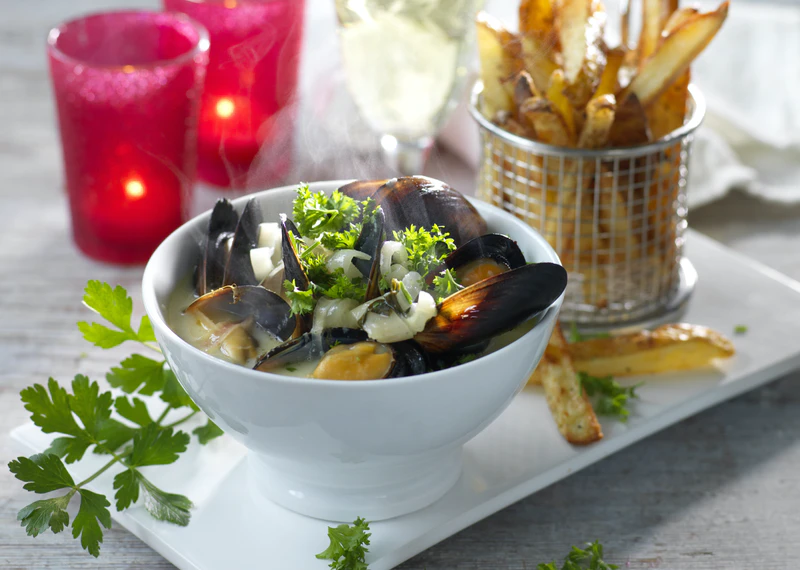

Moules frites

Description
This simple but elegant dish pairs flavorful steamed mussels with crispy
oven fries. Uncork an American chardonnay to sip alongside.
Ingredients
- Mussels
- Olive oil
- Egg yolk
- Salt and pepper
- Lemon juice
- Mustard
- White whine
- Chopped leek
- Minced shallot
- Sliced scallions & crushed red pepper
Steps
-
Place a large rimmed baking sheet in oven; preheat to 220°C. Bring a
kettle of water to a boil.
-
Place potato wedges in a medium bowl and cover with boiling water. Let
stand for 5 minutes. Drain and pat dry. Toss with 1 tablespoon oil, 1/4
teaspoon ground pepper, salt and cayenne in the medium bowl. Spread the
wedges in a single layer on the preheated pan. Bake, flipping once,
until golden and crispy, 25 to 30 minutes.
-
Meanwhile, whisk egg yolk, 1 teaspoon parsley, lemon juice, 1/2 teaspoon
shallot, mustard and the remaining 1/4 teaspoon pepper in a small bowl.
While whisking, drizzle in 2 tablespoons oil until blended. Set aside.
-
Heat the remaining 1 tablespoon oil in a large pot over medium heat. Add
leek and the remaining 1 tablespoon shallot; cook, stirring
occasionally, until softened, about 5 minutes. Add mussels, wine and the
remaining 1 tablespoon parsley. Cover and steam until the mussels open,
3 to 5 minutes.
-
Transfer the mussels to a large serving bowl and top with scallions and
crushed red pepper, if desired. Serve the mussels and potato wedges with
the aioli for dipping.